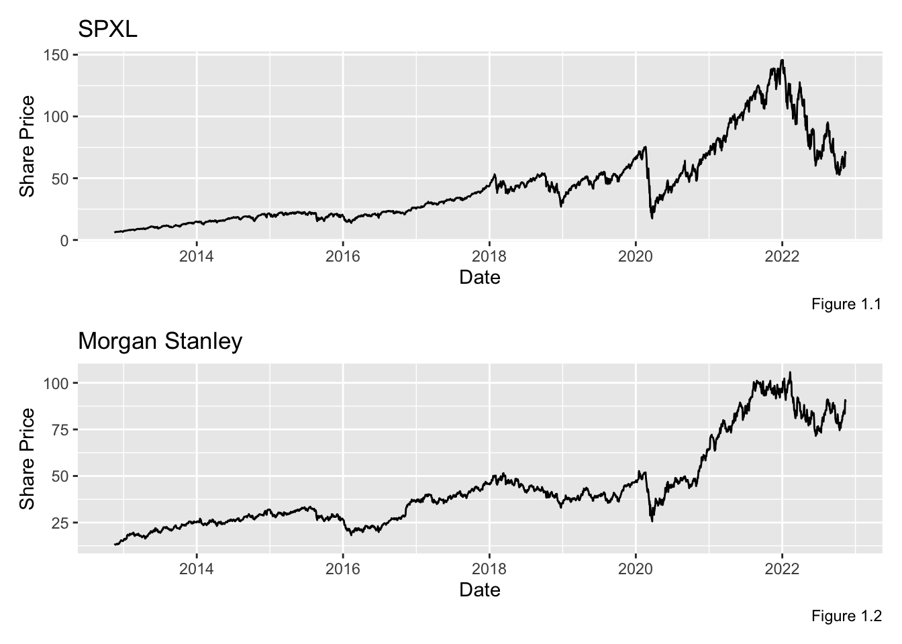
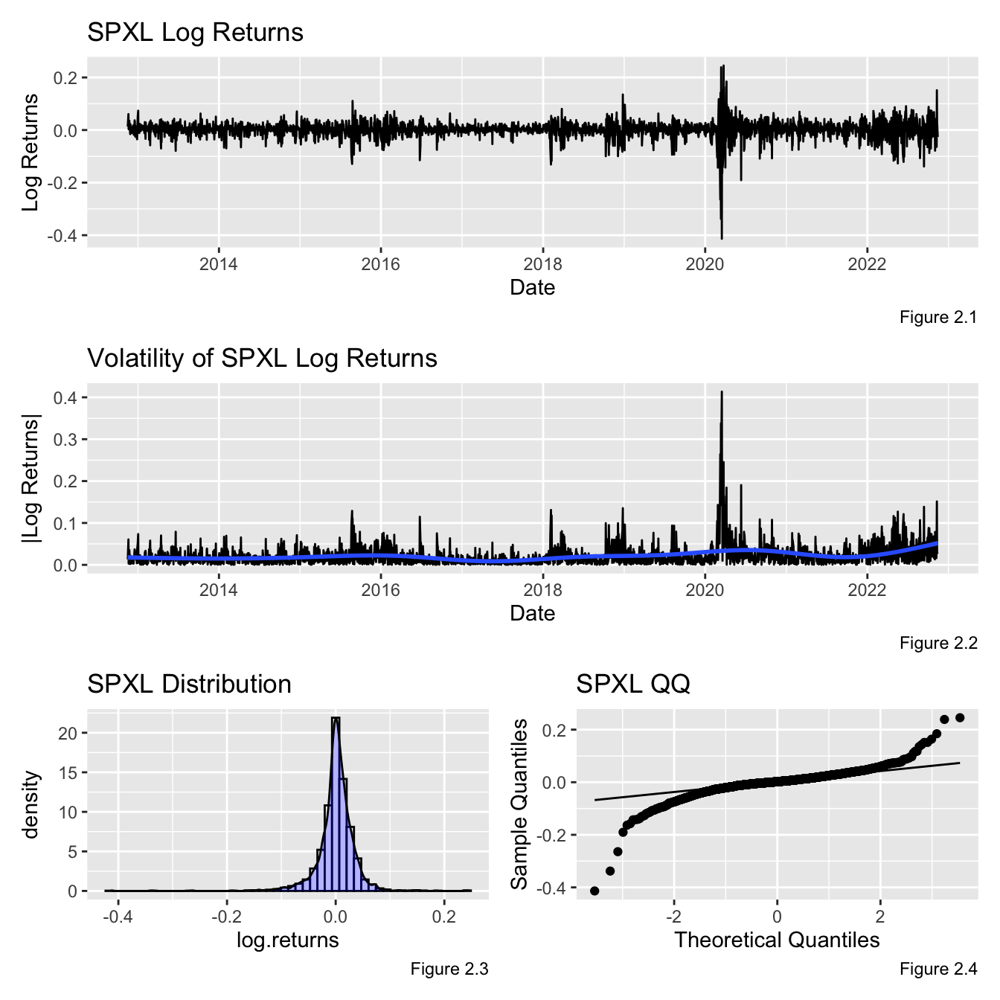
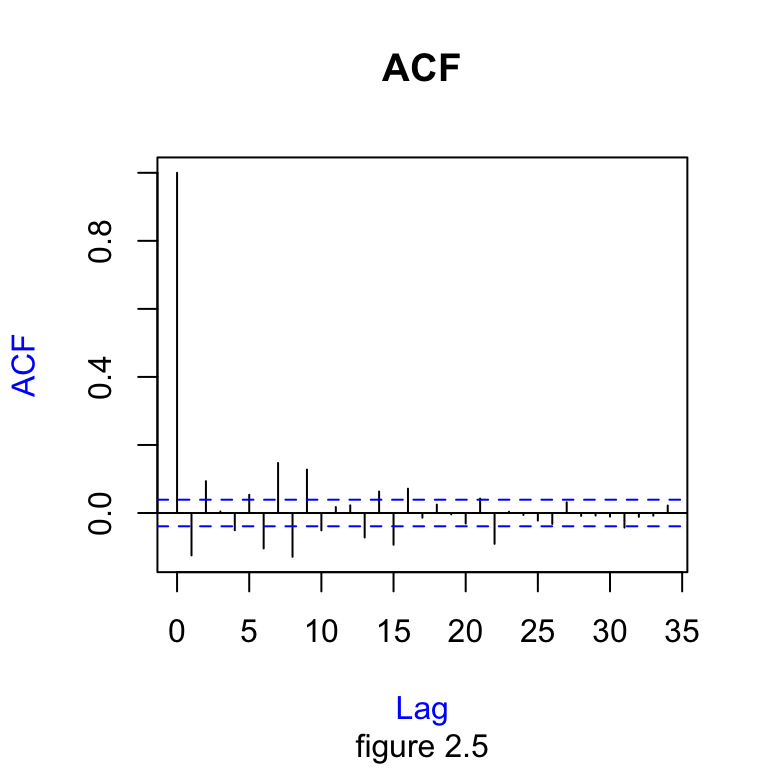
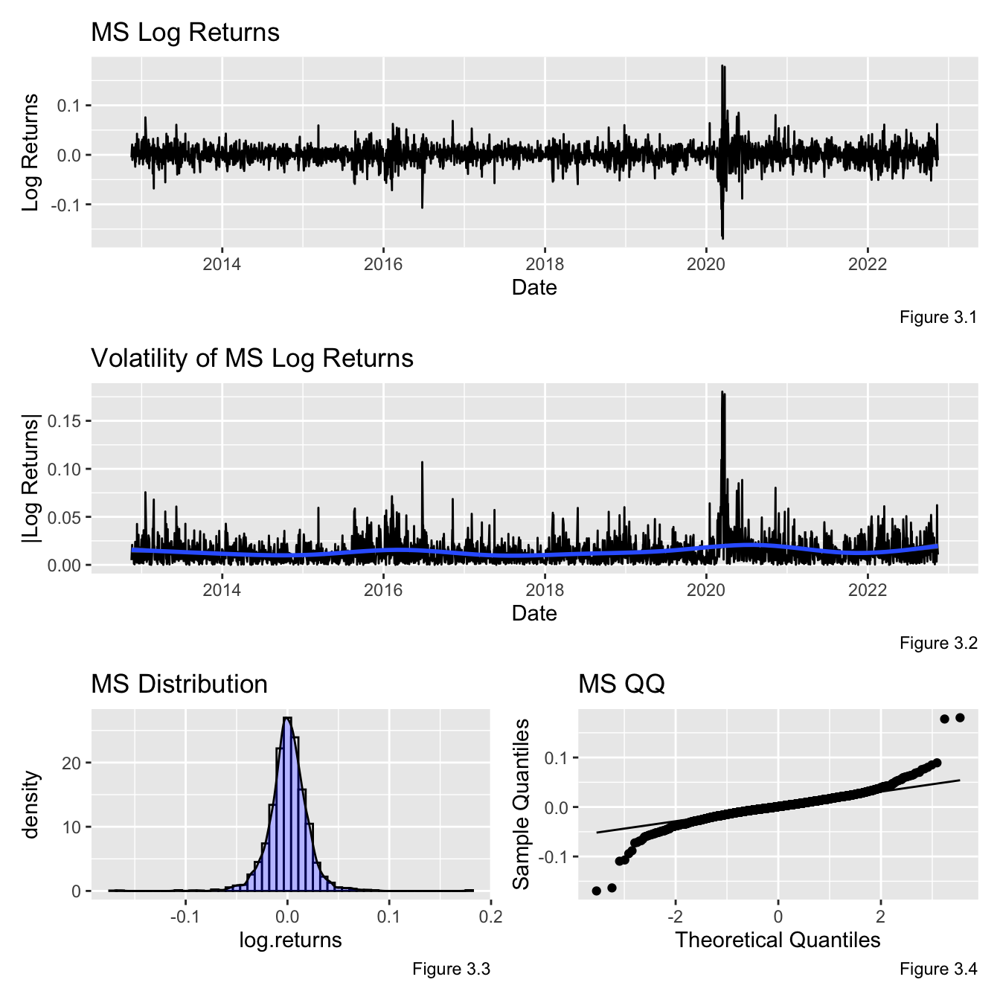
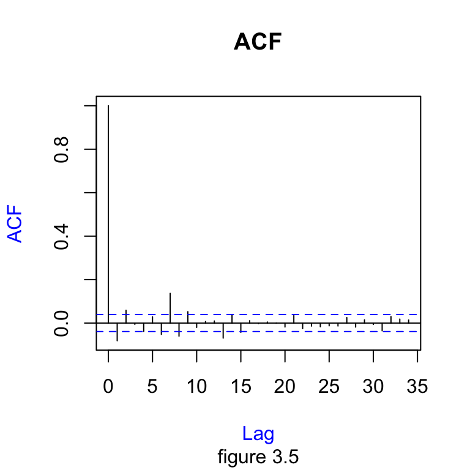
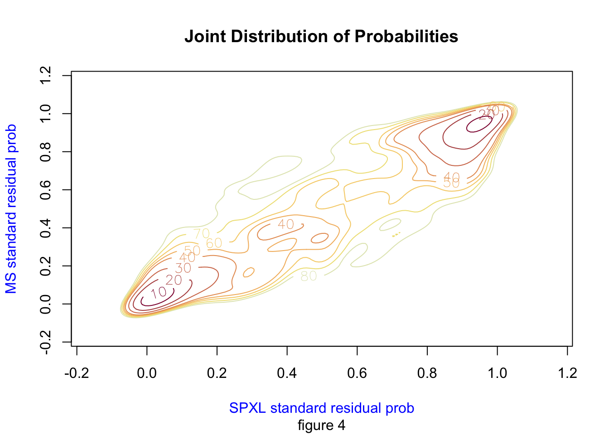
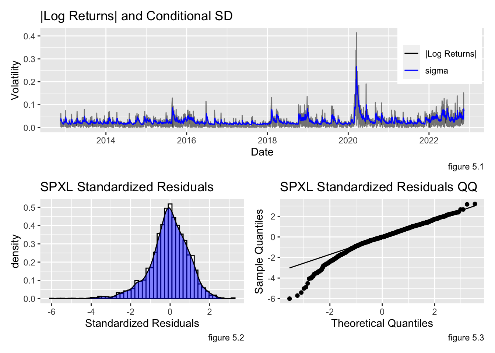
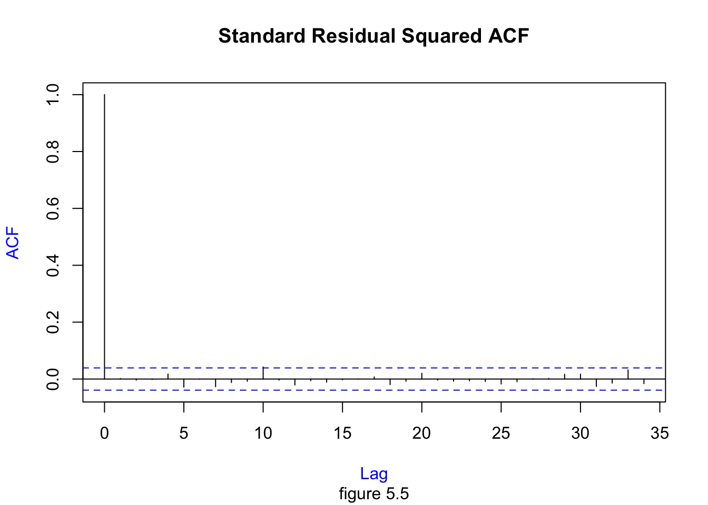
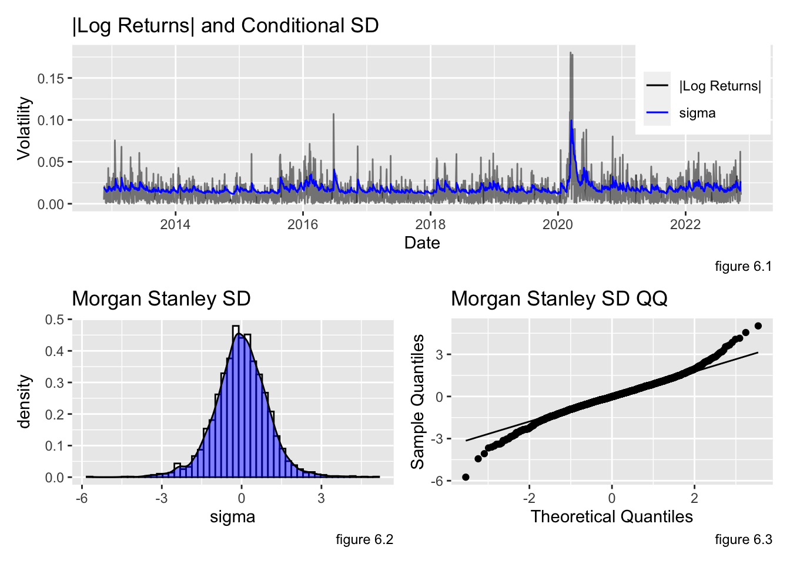
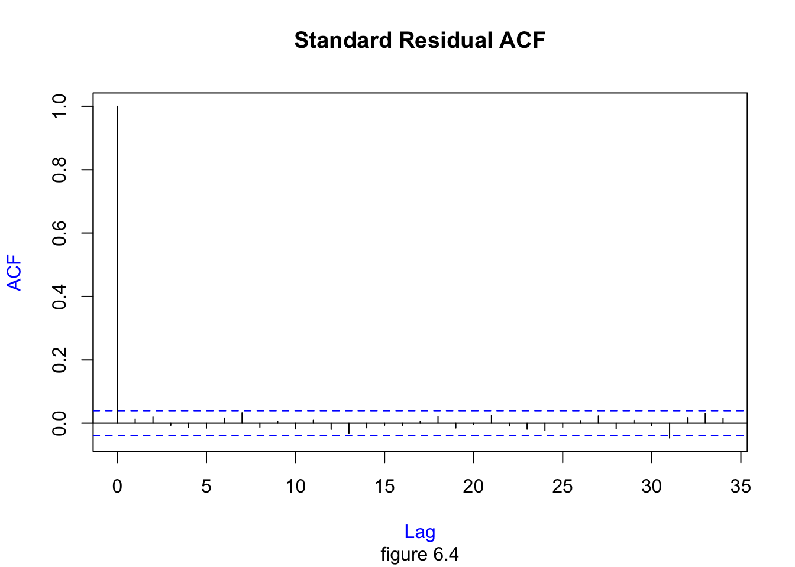

Final Project
Aim
This project aims to estimate the market risk of a portfolio containing two different financial stocks. The risk estimand chosen is Value-at-Risk (VaR) because of its wide use and interpretability. VaR requires two parameters, a confidence coefficient and a time horizon. We use a 99% confidence level for the next day’s portfolio log return. This process is iterated over several portfolio weights to determine the lowest risk combination. The process to obtain this goal utilizes advanced econometric techniques.
Data Sets
Morgan Stanley (MS) and Direxion Daily S&P 500 Bull 3X Shares (SPXL) are the two stocks that make up the portfolio. Morgan Stanley is an investment management and financial services company currently the sixty-fourth largest weighted stock in the S&P 500. The firm supplies investment banking products globally to individuals, corporations, and governments. As of 2022, the company has a 150.758 billion market cap and is projected to bring in more than 60 billion in revenue this year.
The S&P 500 is a market-cap-weighted index of the top 500 large-cap and mid-cap US companies. SPXL is a tactical leverage product that gets 3x exposure (this is subject to variation) to the S&P 500. According to yahoo finance, the fund invests approximately 80% of its assets in various financial instruments, including swaps, S&P securities, and ETFs. Ten years ago, the stock was trading at $6.30 a share, as of 11/15/2022, it is trading at 60.54 a share (1,003% increase), with a spike in January 2022 at $145.77 per share.
This analysis uses ten years of daily data between 11/15/2012 to 11/15/2022 for both MS and SPXL. The data is collected from yahoo finance’s API. The financial engineering that went into the project is explained step-by-step in the code/text below. The entire code used for the project, including the graphs, is in the Appendix.

Explore Data
SPXL
Given the yahoo finance data, log returns are calculated and analyzed. Figure 2.3 shows the SPXL returns have a bell-shaped curve with a mean return of .00098, a standard deviation of .03326, and light tales. Figure 2.1 displays SPXL log returns over time, and figure 2.2 shows the same time series volatility. These two graphs indicate the stationary time series (Augmented Dicky Fuller in Appendix A) has time-varying volatility. A normal ARIMA process assumes constant condition variance, so the data suggests we need a GARCH model.
An ACF plot is displayed below. The autocorrelation coefficient converges to zero, further indicating a stationary trend. However, the Ljung-Box test results (Appendix B) show a non-zero correlation in the first ten lags (k=10). From this, we can reject the white noise null hypothesis and take advantage of the serial correlation in an AR process.


Morgan Stanley
The Morgan Stanley log returns have a mean of .00077, a standard deviation of .01965, and light tails. From figure 2.1, the returns appear to be stationary (ADF Test in Appendix A) with time-varying volatility (figure 2.2). The Ljung-Box test outputs a p-value less than .05 (Appendix B), so we can reject the null hypothesis and conclude that there is a short-term serial correlation (K=10). The ACF chart below is another indicator that the data converge to stationary.


Time Series Model
AR(1) + GARCH(1,1)
In the “Explore Data” section, we concluded, with reasonable confidence, that SPXL and MS stock returns are stationary, time-dependent, and subject to heteroskedasticity. These characteristics can be exploited to create a forecasting model for future log returns and volatility. I am constructing an AR(1) + GARCH(1,1) model for this analysis. The conditional mean will be determined by a one-period lag, \(X_{t-1}\) (equation 1), and the conditional variance will be a function of the previous period residual, \(e_{t-1}\), and standard deviation \(\sigma_{t-1}\) (equation 2). Table 1 shows the MLEs of the process for each stock. A Ljung_Box test on the standard residuals and standard residuals squared output a p-value greater than .05, revealing no serial correlation in \(\epsilon\) or \(\epsilon^2\) (Appendix C).
\[
X_t = \mu + \phi X_{t-1} + e_t, \space e_t = \sigma_t \epsilon_t
\tag{1}\]
\[
\sigma_t^2 = w + \alpha e_{t-1}^2 + \beta \sigma^2_{t-1}, \space t = 1,...,n
\tag{2}\]
| Table 1 | |||
| Parameters | SPXL | MS | |
|---|---|---|---|
| 1 | mu | 0.00246 | 0.00113 |
| 2 | ar1 | -0.06089 | -0.00276 |
| 3 | omega | 4e-05 | 2e-05 |
| 4 | alpha1 | 0.2393 | 0.11647 |
| 5 | beta1 | 0.73317 | 0.81858 |
Residual Fits
The standard residuals, \(\epsilon\), from the \(AR(1) + GARCH(1,1)\) model can be exploited to approximate the model error distribution. Each stock’s standard residuals are fitted to a Student’s T distribution. The tables below show the MLEs for SPXL and Morgan Stanley after being fitted to the t distribution (Table 2). The standard residuals are transformed into probabilities using the fitted student t CDF. The probability’s joint distribution is plotted non-parametrically in figure 4. This figure shows high tail dependencies between the two stocks.
A parametric approach is also used. A Gaussian copula, Gumbel copula, and Clayton copula are explored; however, the t-copula had the lowest AIC and BIC, so it was chosen for the residual analysis. The copulas and their respective AIC and BICs are below (Table 4).
Student T Distrubution
| Table 2 | ||
| Parameter | SPXL | MS |
|---|---|---|
| mean | -0.00669 | -0.01613 |
| sd | 0.79433 | 0.82586 |
| df | 5.35024 | 6.24645 |
Copula Fit
Set-up
| Table 3 | |
| Error Associations | |
|---|---|
| pearson | 0.68598 |
| kendall | 0.49327 |
| omega | 0.6996 |
Below is the non-parametric probability density estimations for original monthly data.

AIC & BIC
\[ AIC = -2*log[\hat{L(\theta})]+2p, \space \text{where } p \text{ is the length of } \theta \]
\[ BIC = -2*log[\hat{L(\theta})]+p*log(n), \space \text{where } p \text{ is the length of } \theta \]
| Table 4 | ||
| AIC | BIC | |
|---|---|---|
| t-copula | -1805.28 | -1793.62 |
| guassian | -1716.47 | -1710.64 |
| gumbel | -1605.09 | -1599.26 |
| clayton | -1605.09 | -1599.26 |
Residual Analysis
SPXL
Figure 5.1 shows the volatility of SPXL log returns superimposed with the predicted standard deviation,\(\sigma\), for the GARCH(1,1) function. The GARCH(1,1) predicts the volatility well. The standard residuals have a mean of -0.01818 and a standard deviation of 0.99950. Figure 5.4 and figure 5.5 indicate that the standard residual lag terms are not correlated and that the data is stationary. A Ljung-Box test for standard residuals and standard residual squared confirms no autocorrelation (Appendix C).


Morgan Stanley
Figure 6.1 shows the volatility of MS log returns superimposed with the predicted standard deviation,\(\sigma\), for the GARCH(1,1) function. The GARCH(1,1) predicts the volatility well. The standard residuals have a mean of -0.024100 and a standard deviation of 0.99933. Figures 6.4 and 6.5 indicate that the standard residual lag terms are not correlated and that the data is stationary.


Risk Calculation
The Value-at-Risk (VaR) is calculated for different portfolio allocations between SPXL and MS\((\rho = .1,.2,...,.9)\). To get an accurate measure, a sample of 10,000 standard residuals are taken from the t-copula distribution. It is important to note that the sample maintains marginal distributions and associations but does not have a time dimension. The sampled residuals are substituted into the \(AR(1) + GARCH(1,1)\) model along with the 11/15/22 portfolio forecast (equation 3). The output of this process is a distribution of possible t+1 forecasts for each portfolio allocation.
\[ \begin{bmatrix} P_{1,\rho = .1}^t & \cdots & P_{1,\rho = .9}^t \\ \vdots & \ddots & \vdots \\ P_{n,\rho = .1}^t & \cdots & P_{n,\rho = .9}^t \end{bmatrix} = \begin{bmatrix} (\mu + \phi X_{t-1} + \sigma_t \epsilon_1^*) & (\tilde{\mu} + \tilde{\phi X_{t-1}} + \tilde{\sigma_t} \tilde{\epsilon}_1^*) \\ \vdots & \vdots\\ (\mu + \phi X_{t-1} + \sigma_t \epsilon_n^*) & (\tilde{\mu} + \tilde{\phi X_{t-1}} + \tilde{\sigma_t} \tilde{\epsilon}_n^*) \\ \end{bmatrix} \begin{bmatrix} \rho_{\rho = .1} & (1-\rho_{\rho = .1}) \\ \vdots & \vdots \\ \rho_{\rho = .9} & (1-\rho_{\rho = .9}) \end{bmatrix}^T \tag{3}\]
\[ \text{where } n=10,000, \text{ and } \sigma_t \text{ is a GARCH(1,1) process} \]
Table 6 shows the VaR for different shares of the SPXL in the portfolio. Portfolios can reduce risk by decreasing the portfolio’s exposure to SPXL. For example, if the portfolio is 90% SPXL, there is a 10% chance of losing more than 0.056 cents per dollar invested. If the portfolio is 10% SPXL, there is a 10% chance of losing more than 0.026 cents per dollar invested. However, it should be noted that VaR discriminates against diversifying stock portfolios.
| Table 6 | |
| rho | VaR |
|---|---|
| 0.1 | 0.02598 |
| 0.2 | 0.02849 |
| 0.3 | 0.03162 |
| 0.4 | 0.03518 |
| 0.5 | 0.03906 |
| 0.6 | 0.04318 |
| 0.7 | 0.04745 |
| 0.8 | 0.05186 |
| 0.9 | 0.05636 |
Appendix
A. Augmented Dicky Fuller
SPXL
adf.test(SPXL$log.returns)
Augmented Dickey-Fuller Test
data: SPXL$log.returns
Dickey-Fuller = -13.197, Lag order = 13, p-value = 0.01
alternative hypothesis: stationaryMorgan Stanley
adf.test(MS$log.returns)
Augmented Dickey-Fuller Test
data: MS$log.returns
Dickey-Fuller = -13.238, Lag order = 13, p-value = 0.01
alternative hypothesis: stationaryB. Ljung-Box Test on Log Returns
SPXL
Box.test(SPXL$log.returns, lag = 10, type = "Ljung-Box")
Box-Ljung test
data: SPXL$log.returns
X-squared = 246.56, df = 10, p-value < 2.2e-16Morgan Stanley
Box.test(MS$log.returns, lag = 10, type = "Ljung-Box")
Box-Ljung test
data: MS$log.returns
X-squared = 102.45, df = 10, p-value < 2.2e-16C. AR+GARCH Model Fits
SPXL
spxl.ar.garch
*---------------------------------*
* GARCH Model Fit *
*---------------------------------*
Conditional Variance Dynamics
-----------------------------------
GARCH Model : sGARCH(1,1)
Mean Model : ARFIMA(1,0,0)
Distribution : norm
Optimal Parameters
------------------------------------
Estimate Std. Error t value Pr(>|t|)
mu 0.002462 0.000385 6.3941 0.000000
ar1 -0.060890 0.022523 -2.7035 0.006862
omega 0.000039 0.000005 7.2586 0.000000
alpha1 0.239296 0.023844 10.0361 0.000000
beta1 0.733170 0.021450 34.1807 0.000000
Robust Standard Errors:
Estimate Std. Error t value Pr(>|t|)
mu 0.002462 0.000393 6.2619 0.000000
ar1 -0.060890 0.020594 -2.9566 0.003110
omega 0.000039 0.000008 4.7514 0.000002
alpha1 0.239296 0.035486 6.7434 0.000000
beta1 0.733170 0.030589 23.9684 0.000000
LogLikelihood : 5716.828
Information Criteria
------------------------------------
Akaike -4.5404
Bayes -4.5288
Shibata -4.5404
Hannan-Quinn -4.5362
Weighted Ljung-Box Test on Standardized Residuals
------------------------------------
statistic p-value
Lag[1] 2.093 0.1480
Lag[2*(p+q)+(p+q)-1][2] 2.174 0.1605
Lag[4*(p+q)+(p+q)-1][5] 2.960 0.4415
d.o.f=1
H0 : No serial correlation
Weighted Ljung-Box Test on Standardized Squared Residuals
------------------------------------
statistic p-value
Lag[1] 0.007101 0.9328
Lag[2*(p+q)+(p+q)-1][5] 0.762522 0.9106
Lag[4*(p+q)+(p+q)-1][9] 2.411629 0.8506
d.o.f=2
Weighted ARCH LM Tests
------------------------------------
Statistic Shape Scale P-Value
ARCH Lag[3] 0.005095 0.500 2.000 0.9431
ARCH Lag[5] 1.851611 1.440 1.667 0.5050
ARCH Lag[7] 2.905555 2.315 1.543 0.5316
Nyblom stability test
------------------------------------
Joint Statistic: 1.5914
Individual Statistics:
mu 0.06852
ar1 0.03956
omega 0.25968
alpha1 0.80986
beta1 0.86101
Asymptotic Critical Values (10% 5% 1%)
Joint Statistic: 1.28 1.47 1.88
Individual Statistic: 0.35 0.47 0.75
Sign Bias Test
------------------------------------
t-value prob sig
Sign Bias 3.6434 0.0002746 ***
Negative Sign Bias 0.7840 0.4331251
Positive Sign Bias 0.1473 0.8828732
Joint Effect 20.7247 0.0001201 ***
Adjusted Pearson Goodness-of-Fit Test:
------------------------------------
group statistic p-value(g-1)
1 20 132.9 4.079e-19
2 30 156.6 1.878e-19
3 40 173.2 7.770e-19
4 50 186.5 6.582e-18
Elapsed time : 0.1319671 Morgan Stanley
ms.ar.garch
*---------------------------------*
* GARCH Model Fit *
*---------------------------------*
Conditional Variance Dynamics
-----------------------------------
GARCH Model : sGARCH(1,1)
Mean Model : ARFIMA(1,0,0)
Distribution : norm
Optimal Parameters
------------------------------------
Estimate Std. Error t value Pr(>|t|)
mu 0.001128 0.000322 3.50540 0.000456
ar1 -0.002761 0.021890 -0.12612 0.899638
omega 0.000022 0.000006 3.69389 0.000221
alpha1 0.116475 0.020896 5.57412 0.000000
beta1 0.818577 0.034919 23.44221 0.000000
Robust Standard Errors:
Estimate Std. Error t value Pr(>|t|)
mu 0.001128 0.000314 3.5944 0.000325
ar1 -0.002761 0.022911 -0.1205 0.904089
omega 0.000022 0.000012 1.8830 0.059697
alpha1 0.116475 0.044046 2.6444 0.008184
beta1 0.818577 0.071649 11.4248 0.000000
LogLikelihood : 6626.937
Information Criteria
------------------------------------
Akaike -5.2639
Bayes -5.2523
Shibata -5.2639
Hannan-Quinn -5.2597
Weighted Ljung-Box Test on Standardized Residuals
------------------------------------
statistic p-value
Lag[1] 0.4505 0.5021
Lag[2*(p+q)+(p+q)-1][2] 0.9440 0.7730
Lag[4*(p+q)+(p+q)-1][5] 1.6090 0.8192
d.o.f=1
H0 : No serial correlation
Weighted Ljung-Box Test on Standardized Squared Residuals
------------------------------------
statistic p-value
Lag[1] 0.5594 0.4545
Lag[2*(p+q)+(p+q)-1][5] 2.3265 0.5435
Lag[4*(p+q)+(p+q)-1][9] 4.3052 0.5379
d.o.f=2
Weighted ARCH LM Tests
------------------------------------
Statistic Shape Scale P-Value
ARCH Lag[3] 1.037 0.500 2.000 0.3085
ARCH Lag[5] 2.562 1.440 1.667 0.3599
ARCH Lag[7] 3.654 2.315 1.543 0.3992
Nyblom stability test
------------------------------------
Joint Statistic: 0.7931
Individual Statistics:
mu 0.0587
ar1 0.1259
omega 0.3647
alpha1 0.3456
beta1 0.4560
Asymptotic Critical Values (10% 5% 1%)
Joint Statistic: 1.28 1.47 1.88
Individual Statistic: 0.35 0.47 0.75
Sign Bias Test
------------------------------------
t-value prob sig
Sign Bias 0.06296 0.94980
Negative Sign Bias 1.99404 0.04626 **
Positive Sign Bias 0.34433 0.73063
Joint Effect 6.38743 0.09421 *
Adjusted Pearson Goodness-of-Fit Test:
------------------------------------
group statistic p-value(g-1)
1 20 51.74 7.230e-05
2 30 65.88 1.085e-04
3 40 80.38 1.079e-04
4 50 100.38 2.134e-05
Elapsed time : 0.1538219 D. AR and GARCH functions
#| echo: FALSE
ar1 <- function(mu, phi, x_prev) {
x = mu*(1-phi) + phi * x_prev
return(as.numeric(x))
}
garch1.1 <- function(omega, alpha, beta, e_prev, sigma_prev) {
sigma_sq <- omega + alpha*(e_prev^2) + beta*(sigma_prev^2)
sqrt(sigma_sq) %>% as.numeric() %>% return()
}E. Project Code
Data Sets
library(tidyverse)
library(quantmod)
library(dplyr)
library(sn)
library(MASS)
library(fGarch)
library(ks)
library(copula)
library(patchwork)
library(rugarch)
library(tseries)
library(broom)
library(htmlTable)getSymbols("SPXL;MS",
from = "2012/11/15",
to = "2022/11/15",
periodicity = "d",
src = "yahoo")SPXL <- SPXL %>%
data.frame()
MS <- MS %>%
data.frame()SPXL <- SPXL %>%
mutate(log.returns = log(SPXL.Adjusted) - log(dplyr::lag(SPXL.Adjusted))) %>%
na.omit()
MS <- MS %>%
mutate(log.returns = log(MS.Adjusted) - log(dplyr::lag(MS.Adjusted))) %>%
na.omit()
SPXL <- SPXL %>% mutate(date = rownames(SPXL))
MS <- MS %>% mutate(date = rownames(MS))a <- ggplot(SPXL) +
geom_line(aes(as.Date(date),SPXL.Adjusted)) +
labs(title = "SPXL", y = "Share Price", x = "Date", caption = "Figure 1.1")
b <- ggplot(MS) +
geom_line(aes(as.Date(date),MS.Adjusted)) +
labs(title = "Morgan Stanley", y = "Share Price", x = "Date", caption = "Figure 1.2")
a/bmean(SPXL$log.returns)
sd(SPXL$log.returns)
lm(log.returns ~lag(log.returns), data = SPXL)time_spxl <- ggplot(SPXL) +
geom_line(aes(as.Date(date), log.returns)) +
labs(title = "SPXL Log Returns", x = "Date", y = "Log Returns", caption = "Figure 2.1")
distr_spxl <- ggplot(SPXL) +
geom_histogram(aes(log.returns, ..density..), fill = "white", color = "black", bins = 50) +
geom_density(aes(log.returns), fill = "blue", alpha = .3) +
labs(title = "SPXL Distribution", caption = "Figure 2.3")
qq_spxl <- ggplot(SPXL, aes(sample = log.returns)) +
stat_qq() +
stat_qq_line() +
labs(title = "SPXL QQ", x = "Theoretical Quantiles", y = "Sample Quantiles", caption = "Figure 2.4")
a <- ggplot(SPXL) +
geom_line(aes(as.Date(date), abs(log.returns))) +
geom_smooth(aes(as.Date(date), abs(log.returns))) +
labs(title = "Volatility of SPXL Log Returns", x = "Date", y = "|Log Returns|", caption = "Figure 2.2")
time_spxl / a /(distr_spxl | qq_spxl) acf(SPXL$log.returns,
main = "ACF",
sub="figure 2.5",
col.lab = "blue")mean(MS$log.returns)
sd(MS$log.returns)distr_ms <- ggplot(MS) +
geom_histogram(aes(log.returns, ..density..), fill = "white", color = "black", bins = 50) +
geom_density(aes(log.returns), fill = "blue", alpha = .3) +
labs(title = "MS Distribution", caption = "Figure 3.3")
time_ms <- ggplot(MS) +
geom_line(aes(as.Date(date), log.returns)) +
labs(title = "MS Log Returns", x = "Date", y = "Log Returns", caption = "Figure 3.1")
qq_ms <- ggplot(MS, aes(sample = log.returns)) +
stat_qq() +
stat_qq_line() +
labs(title = "MS QQ", x = "Theoretical Quantiles", y = "Sample Quantiles", caption = "Figure 3.4")
a <- ggplot(MS) +
geom_line(aes(as.Date(date), abs(log.returns))) +
geom_smooth(aes(as.Date(date), abs(log.returns))) +
labs(title = "Volatility of MS Log Returns", x = "Date", y = "|Log Returns|", caption = "Figure 3.2")
time_ms / a /(distr_ms | qq_ms)acf(MS$log.returns,
main = "ACF",
sub="figure 3.5",
col.lab = "blue")Creating the AR(1) + GARCH(1,1)
a <- coef(spxl.ar.garch) %>% tidy()
a[,2] <- round(a[,2], 5)
names(a) <- c("Parameters", "SPXL")
b <- coef(ms.ar.garch) %>% tidy()
b[,2] <- round(b[,2], 5)
names(b) <- c("MLE", "MS")
cbind(a, b[,2]) %>% htmlTable(caption = "Table 1")Residual Fits
spxl.e <- residuals(spxl.ar.garch, standardize=TRUE) #returns the standarized residuals
spxl.fit <- fitdistr(spxl.e, "t")
ms.e <- residuals(ms.ar.garch, standardize=T)
ms.fit <- fitdistr(ms.e, "t")spxl.theta <- spxl.fit$estimate
ms.theta <- ms.fit$estimatelibrary(htmlTable)
t.mle = matrix(rep(NA,9), ncol = 3)
t.mle[,1] <- c("mean", "sd", "df")
t.mle[,2] <- round(spxl.theta,5)
t.mle[,3] <- round(ms.theta,5)
colnames(t.mle) <- c("Parameter", "SPXL", "MS")
t.mle %>% htmlTable(caption = "Table 2")Copula Fits
set-up
AICs <- matrix(rep(NA,8), ncol = 2)
rownames(AICs) <- c("t-copula", "guassian", "gumbel", "clayton")
colnames(AICs) <- c("AIC", "BIC")co <- matrix(rep(NA, 3),ncol=1)
colnames(co) <- c("Error Associations")
rownames(co) <- c("pearson", "kendall", "omega")
co[,1] <- round(c(cor(spxl.e, ms.e), tau, omega),5)
co %>% htmlTable(caption = "Table 3")U.hat <- data.frame(u.spxl.e, u.ms.e)
names(U.hat) <- c("SPXL e", "MS e")
fhatU <- kde(x=U.hat,H=Hscv(x=U.hat))#nonparametric density estimation
plot(fhatU,cont=seq(10,80,10),
main = "Joint Distribution of Probabilities",
xlab="SPXL standard residual prob",
ylab="MS standard residual prob",
sub="figure 4",
col.lab = "blue") #contour plotsCopulas
my_aic <- function(L,p) {
aic <- -2*L + 2*p
return(aic)
}
my_bic <- function(L,n,p) {
bic <- -2*L + p*log(n)
return(bic)
}
AICs[1,] <- c(my_aic(t_logLik, 2), my_bic(t_logLik, nrow(u.spxl.e),2)) %>% round(2)AICs %>% htmlTable(caption = "Table 4")Residual Analysis
SPXL
mean(SPXL$resid.std)
sd(SPXL$resid.std)SPXL <- SPXL %>% mutate(fitted = as.vector(fitted(spxl.ar.garch))) %>%
mutate(resid = as.vector(residuals(spxl.ar.garch))) %>%
mutate(resid.std = as.vector(residuals(spxl.ar.garch, standardize=T))) %>%
mutate(sigma = as.vector(sigma(spxl.ar.garch)))
a <-ggplot(SPXL, aes(as.Date(date))) +
geom_line(aes(y = abs(log.returns), colour = "|Log Returns|"),alpha = .5) +
geom_line(aes(y = sigma, colour = "sigma")) +
scale_colour_manual("",
breaks = c("|Log Returns|", "sigma"),
values = c("black","blue")) +
labs(title = "|Log Returns| and Conditional SD", x = "Date", y = "Volatility", caption = "figure 5.1") +
theme(legend.position=c(.9,.75))
b <- ggplot(SPXL, aes(resid.std, ..density..)) +
geom_histogram(fill = "white", color = "black", bins = 50) +
geom_density(fill = "blue", alpha = .5) +
labs(title = "SPXL Standardized Residuals", x = "Standardized Residuals", y = "density", caption = "figure 5.2")
c <- ggplot(SPXL, aes(sample = resid.std)) +
stat_qq() +
stat_qq_line() +
labs(title = "SPXL Standardized Residuals QQ", x = "Theoretical Quantiles", y = "Sample Quantiles", caption = "figure 5.3")
a / (b | c)Morgan Stanley
mean(MS$resid.std)
sd(MS$resid.std)MS <- MS %>% mutate(fitted = as.vector(fitted(ms.ar.garch))) %>%
mutate(resid = as.vector(residuals(ms.ar.garch))) %>%
mutate(resid.std = as.vector(residuals(ms.ar.garch, standardize=T))) %>%
mutate(sigma = as.vector(sigma(ms.ar.garch)))
a <-ggplot(MS, aes(as.Date(date))) +
geom_line(aes(y = abs(log.returns), colour = "|Log Returns|"),alpha = .5) +
geom_line(aes(y = sigma, colour = "sigma")) +
scale_colour_manual("",
breaks = c("|Log Returns|", "sigma"),
values = c("black","blue")) +
labs(title = "|Log Returns| and Conditional SD", x = "Date", y = "Volatility", caption = "figure 6.1") +
theme(legend.position=c(.9,.75))
b <- ggplot(MS, aes(resid.std, ..density..)) +
geom_histogram(fill = "white", color = "black", bins = 50) +
geom_density(fill = "blue", alpha = .5) +
labs(title = "Morgan Stanley SD", x = "sigma", y = "density", caption = "figure 6.2")
c <- ggplot(MS, aes(sample = resid.std)) +
stat_qq() +
stat_qq_line() +
labs(title = "Morgan Stanley SD QQ", x = "Theoretical Quantiles", y = "Sample Quantiles", caption = "figure 6.3")
a / (b | c)Risk Calculations
syn <- rCopula(copula = tCopula(t_params[1], df = t_params[2], dim = 2), n = 10000)